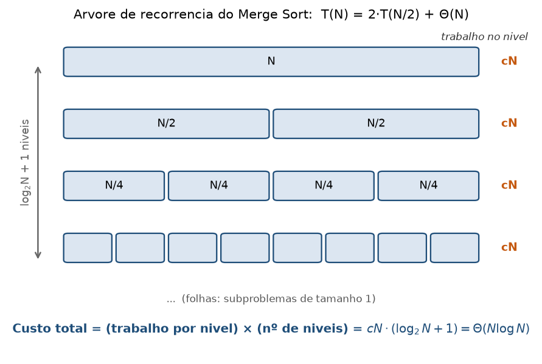
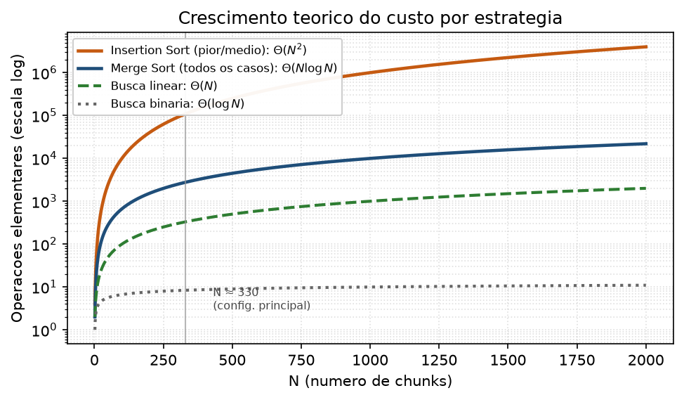

Corretude, eficiência e recuperação de contexto:
um estudo comparativo de estratégias de ordenação e busca sobre um livro-texto aberto
João Cosme Sena Sá · Eduardo Henrique do Lago Silva · Helena Carvalho Leal
Hernandison da Silva Bispo · Nadianne Maria dos Santos Galvão · Rafael Takeguma Goto
| Tema | 8 — Materiais educacionais abertos |
| Corpus | Pense Python (tradução livre da 3ª ed. de Think Python) |
| Repositório | github.com/joaocss/PAA_UFS_2026_2_SenaSa_Joao_Bispo_Hernandison_Galvao_Nadianne_Goto_Rafael_Leal_Helena_Silva_Eduardo |
| Licença do código | MIT · Versão/tag: v0.1.0 |
| Vídeo da atividade | URL a preencher até 22/09/2026 (também em README, VIDEO.md e Google Classroom) |
scripts/reproduzir_tudo.py, conforme o cronograma da disciplina (demonstração inicial no checkpoint de
10/09/2026 e resultados completos até 23/09/2026). Nenhum dado experimental foi estimado ou inventado.
Equipe de seis discentes do curso de Ciência da Computação (PROCC/UFS), matriculados na disciplina Projeto e Análise de Algoritmos no período 2026.2. A modalidade da atividade é trabalho em equipe (5 a 7 integrantes).
| Integrante | Frente principal |
|---|---|
| João Cosme Sena Sá | Coordenação e entrega; dados de teste e pacote; índice invertido e busca binária no vocabulário (Config. 2) |
| Eduardo Henrique do Lago Silva | Experimentos, tabelas, gráficos e baseline de referência scikit-learn (Config. 4) |
| Helena Carvalho Leal | Consultas, julgamentos de relevância (qrels), métricas (Precision@k), relação com IA e limitações |
| Hernandison da Silva Bispo | Ingestão, normalização, fragmentação e manutenção do relatório |
| Nadianne Maria dos Santos Galvão | Corretude, modelo RAM, complexidade e recorrências |
| Rafael Takeguma Goto | Busca linear, Insertion Sort, Merge Sort, pontuação e consulta (Config. 1 e 3) |
A divisão acima é uma proposta de frentes para organizar o trabalho; a
revisão de código, da prova e dos resultados é responsabilidade coletiva. A tabela de contribuição individual
com evidências (commits, arquivos, execuções) é mantida em docs/CONTRIBUICOES.md e resumida na Seção 17.
O tema escolhido é o de número 8 do enunciado, materiais educacionais abertos. O corpus é o livro Pense Python, tradução livre da 3ª edição de Think Python, de Allen B. Downey, traduzida por Rodrigo Castelan Carlson. O material reúne conteúdo didático público de introdução à programação em Python, sem qualquer dado sensível, pessoal ou sigiloso.
| Campo | Registro |
|---|---|
| Nome | Pense Python — tradução livre da 3ª edição de Think Python |
| Autor / Tradução | Allen B. Downey / Rodrigo Castelan Carlson |
| Fonte | rodrigocarlson.github.io/PensePython3ed · github.com/rodrigocarlson/PensePython3ed |
| Commit de referência | cfde2c450bf4f2ea65326da88e9968f400597e92 (branch main) |
| Recorte | 21 notebooks Jupyter: prefácio, introdução e capítulos 1 a 19 (capitulos/*.ipynb) |
| Tamanho auditado | 817.578 bytes · 2.789 células · ~73.867 palavras (texto e código) |
| SHA-256 do recorte | 2010626258…5768dc5 (agregado; ver data/corpus_manifest.csv) |
| Idioma | Português brasileiro (com estrangeirismos técnicos do Python/Jupyter) |
| Licença do texto / do código | CC BY-NC-SA 4.0 / MIT |
| Data de acesso | 02/09/2026 (aquisição registrada); planejamento em 01/09/2026 |
| Dados sensíveis | Nenhum — conteúdo didático público |
scripts/baixar_corpus.py baixa o material no commit fixado e o arquivo
data/corpus_manifest.csv guarda o SHA-256 de cada notebook e um hash agregado do recorte, permitindo
conferir que qualquer download reproduz exatamente o mesmo conjunto auditado. Trechos citados no relatório preservam
atribuição ao autor e ao tradutor.
Pergunta(s) de recuperação. As consultas seguem o formato “tira-dúvidas” de um estudante sobre o livro, por exemplo:
“como funciona um laço for em Python?”, “o que é uma função recursiva?”, “como tratar exceções com try e except?”.
O conjunto completo de 30 consultas está em data/queries.csv, redigido antes de qualquer resultado ser observado.
| Item | Registro |
|---|---|
| URL do repositório | https://github.com/joaocss/PAA_UFS_2026_2_SenaSa_Joao_Bispo_Hernandison_Galvao_Nadianne_Goto_Rafael_Leal_Helena_Silva_Eduardo |
| Licença do código | MIT (arquivo LICENSE) |
| Versão / tag | v0.1.0 (CITATION.cff, date-released: 2026-09-03) |
| Commit/tag/release do relatório | a fixar na entrega final (tag da release de 23/09/2026) |
| Data de acesso ao corpus | 02/09/2026 (a reconfirmar no dia da aquisição) |
| Ambiente travado | requirements.lock: pytest 8.3.4, scikit-learn 1.6.1, matplotlib 3.10.0, numpy 2.2.2 |
O repositório não contém chaves, senhas, tokens, dados pessoais ou artefatos sem licença compatível. Arquivos grandes
(o corpus baixado e dados intermediários) são controlados por .gitignore; as instruções de obtenção e reprodução
estão no README.md.
O protótipo é um recuperador de contexto: dada uma consulta, devolve os trechos mais relevantes do corpus, ordenados por relevância. Não é um chatbot; o interesse está nas operações algorítmicas anteriores à geração de texto.
chunk_id textual único, um source_order idi inteiro único em 0..N-1 (usado no desempate),
o texto normalizado e origemi = (notebook, seção, offset).A pontuação é TF-IDF lexical, definida pela equipe e usada de forma idêntica nas três configurações obrigatórias:
em que ft,c é a frequência do termo t no chunk c, e df(t) é o número de chunks que contêm t. Termos da consulta ausentes do vocabulário não contribuem (contribuição 0). As formas suavizadas (ln f no tf e ln((N+1)/(df+1))+1 no idf) são as mesmas do TF-IDF do scikit-learn, o que mantém limpa a comparação com a Config. 4 e evita zerar um termo presente em todos os chunks. A ordem total ≼ usada na ordenação é:
onde id denota o source_order do chunk. O desempate determinístico por source_order crescente
garante que o resultado independe da ordem de entrada e da configuração usada.
| Categoria | Especificação |
|---|---|
| Pré-condições | N ≥ 0; k ≥ 0; todo score é um número real finito; os source_order são únicos; o comparador ≼ é uma ordem total sobre os chunks. |
| Pós-condições | Seja n' o número de chunks com score > 0. Então |R| = min(k, n'); todo elemento de R pertence a C e é único; R está ordenado por ≼; e não existe chunk fora de R com relevância maior (por ≼) que qualquer elemento de R. Ou seja, R são exatamente os min(k, n') melhores. |
| Casos de borda | consulta vazia após normalização → R = ⟨⟩; k = 0 → R = ⟨⟩; k > n' → devolve os n' com score > 0; todos os scores 0 (nenhum termo casa) → R = ⟨⟩; empates massivos → resolvidos por source_order; termo fora do vocabulário → ignorado. |
| Hipótese sobre os dados | Para a vantagem do índice invertido (Config. 2) supõe-se esparsidade: os termos de consulta típicos ocorrem em poucos chunks (df ≪ N), de modo que o conjunto de candidatos é bem menor que N. A corretude não depende dessa hipótese; apenas a eficiência. |
A normalização é deliberadamente simples, para poder ser auditada:
A segmentação respeita a hierarquia do livro — notebook, título e seção — e nunca mistura célula de texto com célula de código no mesmo chunk. A configuração principal usa 256 tokens com sobreposição de 32, o que produz cerca de 330 chunks. As configurações 128/16 e 512/64 entram apenas no experimento de sensibilidade ao tamanho do bloco.
Os algoritmos obrigatórios do enunciado (§5.2) são cobertos assim: busca linear na pontuação de todos os chunks; ordenação por Insertion Sort e Merge Sort implementados pela equipe; busca binária no vocabulário do índice invertido; divisão e conquista pelo próprio Merge Sort; e comparação com biblioteca pelo TF-IDF do scikit-learn, usado apenas como referência externa (Config. 4).
Como a lista já está totalmente ordenada por ≼, os primeiros min(k, n') elementos são, por definição, os k mais relevantes (corolário provado na Seção 7).
Provamos a corretude do Merge Sort (Config. 3 e núcleo da Config. 2), por indução forte no tamanho da entrada,
apoiada em um invariante de laço para o procedimento Merge. O texto completo está em
docs/CORRETUDE.md.
MergeSort(A, ≼) termina e devolve uma permutação de A ordenada por ≼.
Merge) — invariante de laçoMerge(E, D), com E e D já ordenados por ≼:
(i) a saída O está ordenada por ≼; (ii) O contém exatamente os elementos já consumidos de E (índices < i) e de
D (índices < j); e (iii) todo elemento de O é ≼ a qualquer elemento ainda não consumido de E ou D.
MergeSort é correto para toda entrada de tamanho < n.Merge(E, D) devolve uma
permutação ordenada de E∪D. Como a concatenação de E e D é a própria A a menos de reordenação, o resultado é uma
permutação ordenada de A. ∎Os tamanhos das subchamadas decrescem estritamente (⌊n/2⌋ < n e n−⌊n/2⌋ < n para n > 1) e sempre atingem o caso base; logo a recursão é finita.
O Merge anexa de E em caso de empate, tornando a ordenação estável. Como os id são únicos e entram na
própria relação ≼, não há empates verdadeiros entre chunks distintos: a saída é determinística, independentemente da
ordem de entrada e da configuração (C1, C2 ou C3). Isso é verificado por testes que ordenam a mesma entrada embaralhada e
comparam a saída.
TopK aplicado à saída do MergeSort devolve os k chunks mais relevantes,
cumprindo a pós-condição da Seção 4.3.
Como complemento à prova, a relação de ordem ≼ usada em todas as configurações é validada diretamente em
tests/unit/test_sort_key.py, sobre a função sort_key de src/paa_context/sort_key.py, que
estabelece maior score primeiro e, em empate, menor source_order. Três testes cobrem os pilares do argumento:
test_maior_score_vem_primeiro: prioridade do maior score;test_empate_usa_menor_source_order: critério de desempate por source_order;test_ordem_transitiva: transitividade da relação (condição para ≼ ser ordem total).Os três passam isoladamente e a suíte completa do projeto é executada e aprovada (87 testes na versão de 23/09/2026 —
atualizar o número na versão congelada). Esta análise de corretude, modelo RAM, complexidade e recorrências foi conduzida por
Nadianne Galvão (docs/CORRETUDE.md e o documento de corretude/RAM/complexidade/recorrências).
| Símbolo | Significado |
|---|---|
| N | número de chunks (~330 na configuração principal) |
| V | tamanho do vocabulário (termos distintos) |
| L | total de tokens do corpus |
| m | número de termos da consulta |
| k | número de resultados retornados |
| Cq | número de chunks candidatos (com score > 0) para a consulta q |
| P | tamanho total das listas de postings percorridas = Σt∈q df(t) |
| r | número de repetições experimentais |
Contam-se como operações elementares: comparação de chaves, acesso a vetor/lista, atribuição, incremento, chamada recursiva, consulta a tabela de dispersão e atualização de estrutura. Para dois algoritmos, o detalhamento:
O laço externo executa Cq−1 vezes; o laço interno desloca, no pior caso, todos os elementos já ordenados. O número de comparações é Σi=1Cq−1 i = Cq(Cq−1)/2 no pior caso, com igual ordem de grandeza de acessos e atribuições. Espaço auxiliar Θ(1) (ordena no lugar).
Cada nível da recursão percorre todos os elementos uma vez no Merge (Θ(Cq) comparações e cópias por
nível) e há ⌈log2 Cq⌉ níveis, dando Θ(Cq log Cq) comparações. O Merge
usa listas auxiliares, logo o espaço é Θ(Cq).
| Etapa | C1 (linear + Insertion) | C2 (índice + binária + Merge) | C3 (linear + Merge) |
|---|---|---|---|
| Pontuação / seleção de candidatos | Θ(N·m) | Θ(m·log V + P) | Θ(N·m) |
| Ordenação dos candidatos | O(Cq2) | Θ(Cq log Cq) | Θ(Cq log Cq) |
| Seleção top-k | Θ(k) | Θ(k) | Θ(k) |
| Espaço adicional (consulta) | Θ(Cq) | Θ(V + Ptotal) do índice + Θ(Cq) | Θ(Cq) |
Fatores fora do modelo RAM. O modelo ignora hierarquia de cache, custo de E/S ao ler os notebooks, alocação de memória, comportamento do coletor de lixo do Python e a diferença entre código interpretado (C1–C3) e rotinas vetorizadas em C/NumPy (Config. 4 do scikit-learn). Por isso a Seção 12 mede tempo de parede além de contar operações.
| Algoritmo | Melhor caso | Pior caso | Caso médio | Espaço |
|---|---|---|---|---|
| Busca/pontuação linear | Θ(N·m) | Θ(N·m) | Θ(N·m) | Θ(Cq) |
| Insertion Sort | Θ(n) — já ordenado | Θ(n²) — invertido | Θ(n²) | Θ(1) |
| Merge Sort | Θ(n log n) | Θ(n log n) | Θ(n log n) | Θ(n) |
| Busca binária (por termo) | Θ(1) | Θ(log V) | Θ(log V) | Θ(1) |
| Consulta via índice (C2) | Θ(m log V + Cq log Cq) | Θ(m log V + N log N) | Θ(m log V + P + Cq log Cq) | Θ(V + Ptotal) |
Onde n = Cq é o número de candidatos a ordenar. Observações sobre os parâmetros relevantes:
Origem dos termos na implementação: o fator 2 vem das duas chamadas recursivas (metades E e D); cada
T(N/2) é o custo de ordenar uma metade; o termo Θ(N) é o custo do Merge, que percorre linearmente
as duas metades uma única vez. Pela árvore de recorrência (Figura 2), cada um dos ⌈log2 N⌉+1 níveis realiza
trabalho total Θ(N), somando Θ(N log N). O Teorema Mestre confirma: com a = 2, b = 2, tem-se
Nlogba = N1, e como f(N) = Θ(N) = Θ(N1), aplica-se o caso 2, dando
T(N) = Θ(N log N).

Origem dos termos: há uma única chamada recursiva sobre metade do vocabulário (a outra metade é descartada a cada
passo), e o termo Θ(1) corresponde ao cálculo do meio e à comparação com vocab[mid]. Pelo Teorema Mestre,
a = 1, b = 2, Nlogba = N0 = 1 = f(N): caso 2 novamente, dando T(V) = Θ(log V).
| Config. | Descrição | Papel |
|---|---|---|
| C1 — baseline | Varredura linear + Insertion Sort (implementado pela equipe) | Baseline sem estrutura |
| C2 — indexada | Índice invertido + busca binária no vocabulário + Merge Sort dos candidatos | Busca indexada/otimizada |
| C3 — ordenada | Varredura linear + Merge Sort (implementado pela equipe) | Divisão e conquista na ordenação |
| C4 — referência | TF-IDF do scikit-learn (biblioteca) | Somente baseline externo; não substitui nenhuma exigência |
As três configurações obrigatórias usam os mesmos dados e a mesma função de pontuação; diferem apenas na estrutura de busca e na ordenação. Consequência importante para a validação: C1, C2 e C3 devem produzir listas ranqueadas idênticas (mesma ordem total ≼), diferindo apenas em custo — um teste de consistência forte. A Config. 4 pode divergir por usar normalização L2 e TF sublinear próprias, e por isso é analisada em separado.
O plano cobre 3 configurações × 3 tamanhos de corpus × 5 repetições = 45 execuções mensuráveis (bem acima do mínimo de 12 exigido, e com folga sobre as “pelo menos duas repetições por cenário”). Os três tamanhos são obtidos por subamostragem determinística (semente fixa) de aproximadamente 25%, 50% e 100% dos chunks; adicionalmente, o experimento de sensibilidade varia o chunking em 128/16, 256/32 e 512/64. Cada consulta é executada para k = 5 e k = 10. As duas primeiras execuções de cada cenário são descartadas como aquecimento e a mediana das repetições é reportada com a dispersão.
tracemalloc e RSS do processo).data/qrels.csv), quando há referência.Todo o pipeline roda com python scripts/reproduzir_tudo.py (download → normalização → chunking →
experimentos → figuras). Os scripts são idempotentes. Cada execução registra em experimentos/logs:
hostname, processador, memória, sistema operacional, versão do Python, versões das bibliotecas, commit e a linha de comando
completa — atendendo à exigência de registrar o ambiente. As consultas e os qrels foram fixados antes de observar
qualquer resultado, para evitar viés de seleção.
As 30 consultas de data/queries.csv recebem julgamentos em escala 0, 1 e 2 por dois avaliadores
independentes, com a adjudicação dos desacordos registrada em data/qrels.csv. Isso dá a referência de
relevância necessária para o Precision@k e permite reportar a concordância entre avaliadores.

experimentos/processados após rodar scripts/rodar_experimentos.py. A previsão
qualitativa (não medida) que os experimentos vão testar está indicada em itálico abaixo de cada tabela.
| Config. | N (chunks) | Ingestão (ms) | Ordenação/índice (ms) | Consulta (ms) | Total (ms) | Comparações |
|---|---|---|---|---|---|---|
| C1 | ~330 | — | — | — | — | — |
| C2 | ~330 | — | — | — | — | — |
| C3 | ~330 | — | — | — | — | — |
| C4 (ref.) | ~330 | — | — | — | — | n/a |
Previsão a testar: o tempo de ordenação de C1 cresce como Cq², superando C2/C3 conforme o número de candidatos aumenta; a consulta de C2 é a menor por tocar apenas os candidatos; a contagem de comparações de C2 e C3 fica próxima de Cq·log₂Cq, e a de C1 próxima de Cq²/2 no pior caso.
| Config. | Precision@5 | Precision@10 | Taxa de vazios | Memória pico (MB) |
|---|---|---|---|---|
| C1 | — | — | — | — |
| C2 | — | — | — | — |
| C3 | — | — | — | — |
| C4 (ref.) | — | — | — | — |
Previsão a testar: C1, C2 e C3 têm Precision@k idêntica (mesma função de pontuação e mesma ordem total), confirmando que a diferença entre elas é de custo, não de qualidade; C2 consome mais memória por manter o índice invertido; C4 pode divergir na Precision@k por usar normalização TF-IDF diferente.
| N (chunks) | C1 total (ms) | C2 total (ms) | C3 total (ms) |
|---|---|---|---|
| ~82 (25%) | — | — | — |
| ~165 (50%) | — | — | — |
| ~330 (100%) | — | — | — |
Previsão a testar: a curva de C1 acompanha o crescimento super-linear do Insertion Sort sobre os candidatos, enquanto C2 e C3 crescem de forma quase linear-logarítmica; a vantagem de C2 se amplia com N por evitar tocar chunks sem os termos da consulta.
Para o corpus atual (~330 chunks) as três configurações rodam em milissegundos e as diferenças de tempo são pequenas em valor absoluto — mas a tendência é o que interessa. À medida que o acervo cresce (imagine dezenas de livros abertos, com N na casa dos milhares ou dezenas de milhares de chunks):
Esse é exatamente o trade-off central de sistemas de recuperação: gastar memória e tempo de indexação uma vez para tornar cada consulta sublinear. Bibliotecas como FAISS levam essa ideia ao caso vetorial denso, inclusive para coleções que não cabem em RAM; aqui a demonstramos no caso lexical, com estruturas clássicas.
O contexto recuperado pelo protótipo é precisamente a etapa de retrieval de um sistema RAG (Retrieval-Augmented Generation). Discutimos os sete pontos pedidos:
A declaração detalhada é mantida durante o trabalho em docs/USO_DE_IA.md, com ferramenta, modelo,
finalidade, até cinco prompts reais, sugestões aproveitadas, sugestões corrigidas ou rejeitadas, erros identificados e a
verificação aplicada. Resumo do uso até esta versão:
| Ferramenta / modelo | Finalidade | Verificação exigida |
|---|---|---|
| Assistente de IA generativa (a registrar com o modelo exibido na interface) | Apoio à estruturação e redação deste relatório e à formatação da prova de corretude e dos pseudocódigos. | Toda saída de IA será conferida pela equipe quanto a corretude, complexidade, casos de borda, estabilidade de ordenação e desempate, e coerência entre a análise formal e o experimento, conforme §9 do enunciado. Código, prova ou análise não verificados não entram no trabalho. |
Compromisso de uso crítico. A prova de corretude da Seção 7 será validada por testes que exercitam
estabilidade e desempate; os pseudocódigos, por implementação e testes unitários; e as previsões da Seção 12, pela execução
real. O arquivo docs/USO_DE_IA.md registra cada uso no dia em que ocorre, com o responsável.
O enunciado pede contribuição com evidência, não cargo. A tabela final, com commits, arquivos, análises e execuções
que comprovam cada frente, é mantida em docs/CONTRIBUICOES.md e será consolidada na entrega. A distribuição de
frentes proposta consta na Seção 1. Todos os integrantes participam da revisão coletiva do código, da prova e dos resultados,
e da apresentação e do vídeo.
| Integrante | Frente | Evidências (a consolidar) |
|---|---|---|
| João Cosme Sena Sá | Índice invertido / busca binária (C2); dados de teste, pacote e protocolo | src/paa_context/indice.py, busca_binaria.py, modelos.py, fixtures |
| Eduardo Henrique do Lago Silva | Experimentos / figuras / baseline sklearn (C4) | rodar_experimentos.py, gerar_figuras.py, análise de C4 |
| Helena Carvalho Leal | Consultas / qrels / métricas / IA / limitações | data/queries.csv, data/qrels.csv, metricas.py |
| Hernandison da Silva Bispo | Ingestão / normalização / fragmentação / relatório | preprocessing.py, fragmentacao.py, scripts/, relatorio/ |
| Nadianne Maria dos Santos Galvão | Corretude / RAM / complexidade / recorrências | docs/CORRETUDE.md, test_sort_key.py, Seções 7–10 |
| Rafael Takeguma Goto | Busca linear / Insertion / Merge / pontuação (C1 e 3) | linear_search.py, insertion_sort.py, merge_sort.py, relevance.py |
URL: a preencher até 22/09/2026. O vídeo terá até 10 minutos, com participação de todos os integrantes e
identificação clara de cada contribuição. A mesma URL constará, obrigatoriamente, no README.md (seção “Vídeo da
atividade”), na capa deste relatório, no arquivo VIDEO.md (com data de gravação e participantes) e na área da
atividade no Google Classroom quando solicitado. O vídeo apresentará: identificação da equipe, tema e corpus; o problema de
recuperação; os algoritmos; uma demonstração breve do protótipo; a justificativa de corretude; a análise assintótica e as
recorrências; os resultados e o gráfico principal; a relação com RAG; e as limitações e decisões de projeto.